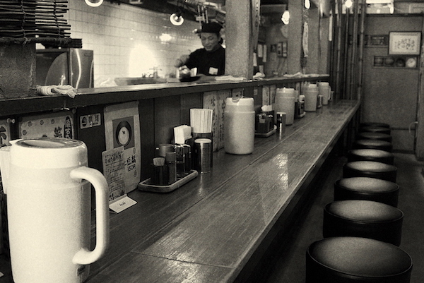

What is Soy Ramen
Soy Ramen, is also called Shoyu ramen in japan, is one kind of very traditional Japanese Ramen. What is SHoyu? Shoyu is the Japanese word for soy sauce. It’s made a lot like miso. In fact, it is technically the byproduct created during the fermentation process when creating miso.Not so many intro ramen lover like it or taste it before. It's like the middle stage of shio and miso, though it doesn't have any miso in it. It's darker and richer than Shio however lighter and smoother than Miso. It has it's own unique favor.

Where To Get The Best Traditional Ramen in Boston
Yume, is Japanese word of drame, means that this is the dream ramen you want to find. Yume Wo Katare is maybe the most intersting ramen place I have ever been to. First of all, I only provide one kind of very traditional Japanses ramen, so all you have to do is pick the ramen size after you walking in to the resturant. That's really similar to some old Japanese ramen shop. And the soup is made by Shuyu, it's not rich like miso and Tonkatsu ramen, but it send it own flavor. Noodle they uses is laso very different. It's bigger than the common ramen noodle. In the Yume, you can talk about your drame and what you want do in the future, that is kind of their resterunt culture.
1923 Massachusetts Ave, Cambridge, MA 02140